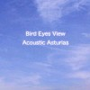

|
ASTURIASはシンセのマニュピレータでベース弾き(AFFLATUSっていうジャズロックバンドに居たらしい)の大山曜さんのプロジェクトで、新月のお二人が参加してます。M.Oldfieldを洗練させたよーなとても綺麗な流れを感じるインストです、アルバム3枚。 ZABADAKの「Welcome to ZABADA」と「十二月の午後、河原で僕は夏の風景を思い出していた」のシンセマニュピレートをしていて、この2枚は結構音の雰囲気が似ているような感じがします。 2004年、Asturiasはアコースティック編成で復活しました。 |
|
